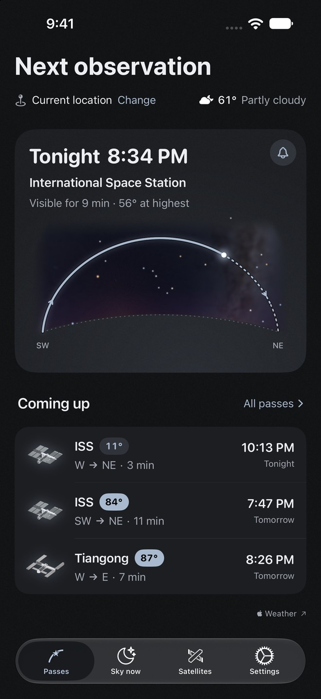
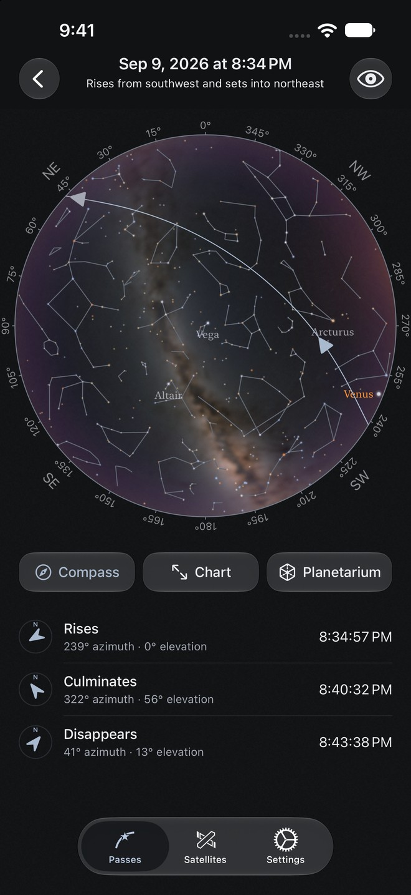
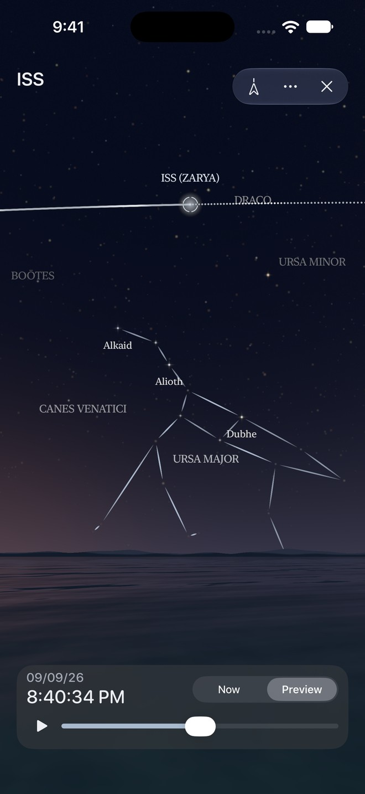
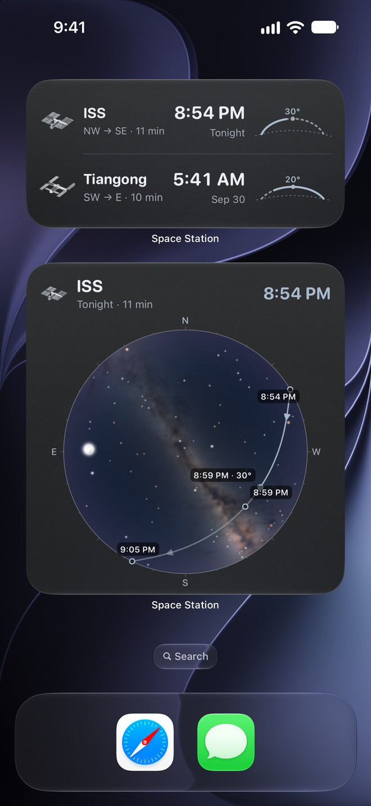

Hi everyone,
I'm the developer of Space Station Passes, a free app for iPhone and iPad that helps you spot the International Space Station, Tiangong, and other satellites. The aim is to answer two practical questions: when is the next visible pass, and where should I look?
The app is fully free, with no ads, subscriptions, or in-app purchases. No account is required.
Some of the observing tools:
The current version, 2.1.0, also shows local weather on the home screen and includes weather guidance in automatic station reminders. Automatic reminders can be skipped when the forecast indicates a high likelihood of rain throughout the pass; alarms you set for individual passes are unaffected.
Download on the App Store
Requires iOS/iPadOS 26 or later.
Overview and support · Privacy details
I'd welcome feedback from fellow observers, especially on the clarity of the charts and how the predicted passes compare with what you see. If you spot a timing or direction issue, the station, observing city, and date/time would help me investigate.
Below are four dark-mode screenshots: next observation, pass sky chart, planetarium preview, and Home Screen widgets. They show example passes; the dates and times are illustrative.
Clear skies!
Sihao (swiftyben)



